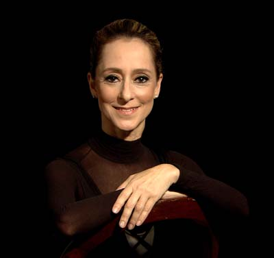
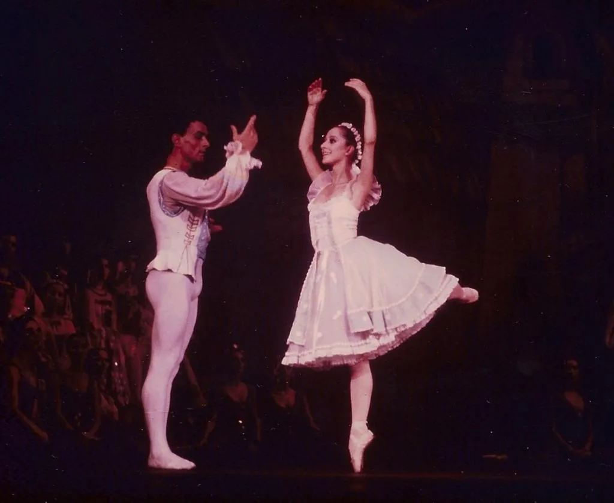

| É uma das mais renomadas bailarinas clássicas do Brasil. Nascida no Rio de Janeiro em 9 de julho de 1957, iniciou seus estudos de dança ainda na infância. Sua formação inclui importantes instituições internacionais, como a Royal Academy of Dance, em Londres, e escolas na França e nos Estados Unidos. |  |
Em 1981, Ana Botafogo foi nomeada primeira-bailarina do Theatro Municipal do Rio de Janeiro, cargo que ocupou por décadas com destaque. Ao longo de sua carreira, interpretou papéis principais em clássicos como Giselle, O Lago dos Cisnes, A Bela Adormecida e Dom Quixote, sendo amplamente reconhecida por sua técnica refinada, expressividade e dedicação à arte.
|  |
|
Além de dançarina, Ana também é professora, coreógrafa e figura frequente na mídia, promovendo a dança clássica no Brasil. |
Após se aposentar dos grandes palcos como bailarina principal, Ana Botafogo continua envolvida com a dança, dirigindo e ensinando novas gerações de bailarinos. Ela é considerada um ícone da cultura brasileira e uma referência mundial no ballet.